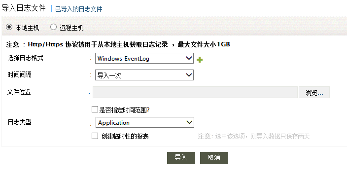
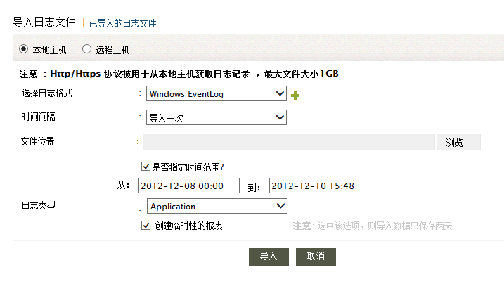
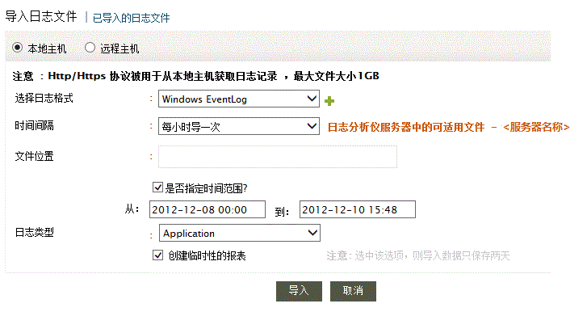
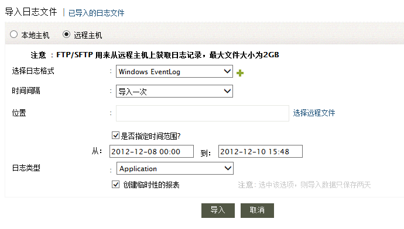
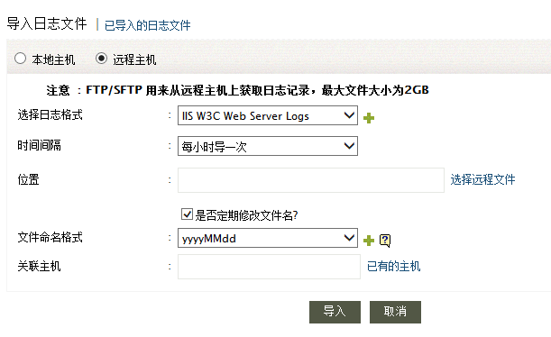
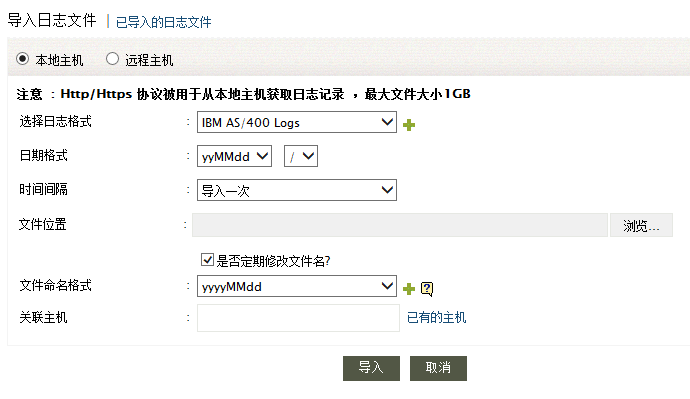

导入应用日志
在EventLog Analyzer中，你要导入应用的日志。但是对于Oracle、打印机和IBM iSeries应用，你也可以实时获取日志。Evenglog Analyzer可以按照一定时间间隔自动导入应用的日志。另外一种做法是，使用FTP把日志传到Evenglog Analyzer监视的主机上，然后通过HTTP把该主机上的日志上传到EventLog Analyzer。EventLog Analyzer还可以导入那些文件名称周期性变化的应用日志。另外，你还可以把导入的日志关联到已经添加的主机中。
使用下面的菜单选项可以把应用日志导入到EventLog Analyzer中:
- 主页标签 > 应用 > 导入日志
- 主页标签 > 应用 > 动作 > +导入
- 主页标签 > 应用 > 导入的日志 > 导入日志文件
- 下拉菜单：+添加 >导入日志
- 设置标签 > 配置： 管理应用： 其他应用
- 设置标签 > 配置： 导入: 导入日志文件
- 设置标签 > 配置： 导入: 导入的日志文件 > 导入日志文件
导入日志文件

-
选择本地主机选择来从本地机器导入日志，就是从你现在使用浏览器访问Evenglog Analyzer的主机。本地导入的日志文件最大为1GB。选择远程主机选项来从远程机器上导入日志。导入的日志文件最大为2GB。
-
选择你要导入的日志格式。这里除了应用日志，其他可以导入的日志格式也列出来了。这里还有一个自动识别日志格式的选项，如果列表中没有你要的日志格式，选择自动识别，该选项也可以识别已有的日志格式，包括Windows事件日志、IIS W3C Web服务器、IIS W3C FTP服务器、MS SQL服务器、DHCP服务器、DHCP Linux、Syslog、Apache访问、IBM Maximo、EventLog Analyzer归档和IBM iSeries (AS/400)。
- 点击导入按钮来开始导入日志。
对于Windows事件日志
从本地主机一次性导入

周期地导入

-
选择导入日志的时间间隔。可以是一次导入、每小时导入、每天导入或者没<xxx>分钟导入一次。
-
如果你选择了本地主机，一次性导入（时间间隔：导入一次）选项可以让你从目前使用Web浏览器访问Eventlog Analyzer的位置导入本地日志文件。选择了‘导入一次’后，提供了浏览按钮来选择日志文件或其所在的目录。
周期地导入日志文件（时间间隔- 每小时导一次、每天导一次或每<xxx>分钟）只有当日志文件位于运行Eventlog Analyzer的机器上时可用。这样的话，就不提供浏览按钮，你要手动指定位于Evenglog Analyzer服务器上的日志文件或其所在目录的完整路径。
从远程主机导入日志

如果你选择了远程主机来从远程主机导入日志文件，对于每种时间间隔，都要手动输入远程主机日志文件或目录的位置。 或者，使用选择远程文件链接来获取文件或目录的位置。
-
如果你要导入一定时间内的日志，选中‘是否指定时间范围’选项。分布选择从、到的时间。这个选项只对导入Windows事件日志有效。
-
当在日志类型选择了Windows Event Log格式后，提供了Application、Security、System、DNS Server、File Replication Service和Directory Service几种类别。
-
当选择了创建临时性的报表后，可以生成临时的报表。导入的日志文件将于2天后删除。
对于 IIS W3C Web服务器、IIS W3C FTP服务器、MS SQL服务器、DHCP Windows、DHCP Linux、Syslog、Apache Access、IBM Maximo、EventLog Analyzer归档日志格式

-
选择导入日志的时间间隔。可以是一次导入、每小时导入、每天导入或者没<xxx>分钟导入一次。
-
如果你选择了本地主机，一次性导入（时间间隔：导入一次）选项可以让你从目前使用Web浏览器访问Eventlog Analyzer的位置导入本地日志文件。选择了‘导入一次’后，提供了浏览按钮来选择日志文件或其所在的目录。
周期地导入日志文件（时间间隔- 每小时导一次、每天导一次或每<xxx>分钟）只有当日志文件位于运行Eventlog Analyzer的机器上时可用。这样的话，就不提供浏览按钮，你要手动指定位于Evenglog Analyzer服务器上的日志文件或其所在目录的完整路径。
如果你选择了远程主机来从远程主机导入日志文件，对于每种时间间隔，都要手动输入远程主机日志文件或目录的位置。 或者，使用选择远程文件链接来获取文件或目录的位置。
-
如果你要导入文件名称周期性更改的日志，选中是否定期修改文件名? ，然后选择或输入文件名称模式。
-
如果你要把导入的日志关联到已有主机中，在‘关联主机’中输入主机名称或者从已有的主机中选择。
对于IBM iSeries (AS/400)日志格式

-
对于IBM AS/400日志文件，选择日期格式（yyMMdd、MMddyy、ddMMyy）和分隔符（/ . -）。
-
选择导入日志的时间间隔。可以是一次导入、每小时导入、每天导入或者没<xxx>分钟导入一次。
-
如果你选择了本地主机，一次性导入（时间间隔：导入一次）选项可以让你从目前使用Web浏览器访问Eventlog Analyzer的位置导入本地日志文件。选择了‘导入一次’后，提供了浏览按钮来选择日志文件或其所在的目录。
周期地导入日志文件（时间间隔- 每小时导一次、每天导一次或每<xxx>分钟）只有当日志文件位于运行Eventlog Analyzer的机器上时可用。这样的话，就不提供浏览按钮，你要手动指定位于Evenglog Analyzer服务器上的日志文件或其所在目录的完整路径。
如果你选择了远程主机来从远程主机导入日志文件，对于每种时间间隔，都要手动输入远程主机日志文件或目录的位置。 或者，使用选择远程文件链接来获取文件或目录的位置。
-
如果你要导入文件名称周期性更改的日志，选中是否定期修改文件名? ，然后选择或输入文件名称模式。
-
如果你要把导入的日志关联到已有主机中，在‘关联主机’中输入主机名称或者从已有的主机中选择。
|